Tutorials
This page provides comprehensive tutorials for all Microgen features.
Basic Shapes
Microgen provides several basic geometric shapes that can be used as building blocks.
Box
import microgen
box = microgen.Box(
center=(0, 0, 0),
dim=(1.0, 0.6, 0.4),
orientation=(0, 0, 0)
)
box.generate_surface_mesh().plot(color='white')
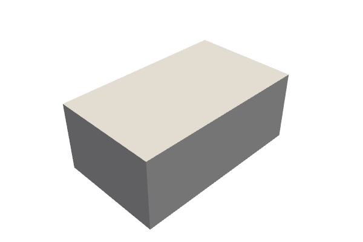
Sphere
sphere = microgen.Sphere(
center=(0, 0, 0),
radius=0.5
)
sphere.generate_surface_mesh().plot(color='white')
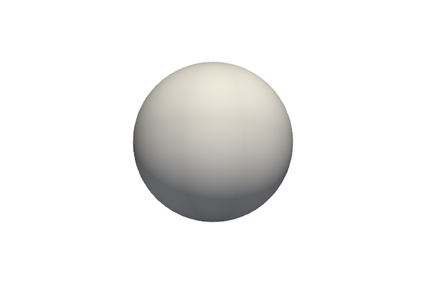
Cylinder
cylinder = microgen.Cylinder(
center=(0, 0, 0),
height=1.0,
radius=0.3,
orientation=(0, 0, 0)
)
cylinder.generate_surface_mesh().plot(color='white')
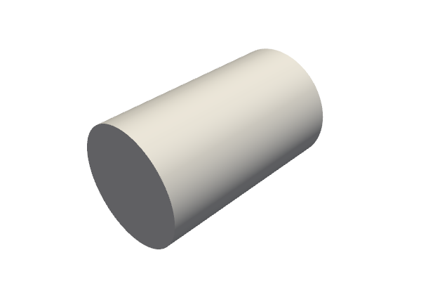
Ellipsoid
ellipsoid = microgen.Ellipsoid(
center=(0, 0, 0),
radii=(0.5, 0.3, 0.2),
orientation=(0, 0, 0)
)
ellipsoid.generate_surface_mesh().plot(color='white')
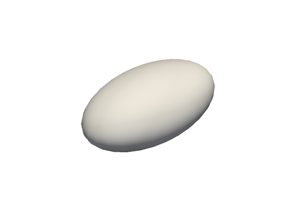
Capsule
capsule = microgen.Capsule(
center=(0, 0, 0),
height=1.0,
radius=0.2,
orientation=(0, 0, 0)
)
capsule.generate_surface_mesh().plot(color='white')
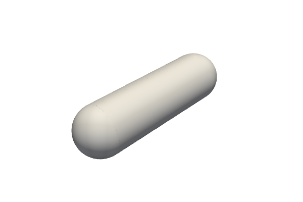
Extruded Polygon
# Define polygon corners
corners = [(0, 0), (1, 0), (1, 1), (0.5, 1.5), (0, 1)]
polygon = microgen.ExtrudedPolygon(
center=(0, 0, 0),
list_corners=corners,
height=0.5,
orientation=(0, 0, 0)
)
polygon.generate_surface_mesh().plot(color='white')
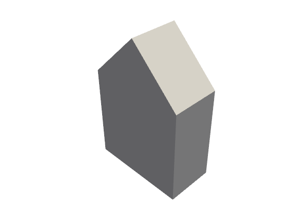
TPMS Surfaces
Microgen supports many TPMS (Triply Periodic Minimal Surfaces) functions.
Available Surface Functions
The following TPMS surface functions are available in microgen.surface_functions:
Function |
Description |
|---|---|
|
Gyroid surface |
|
Schwarz P surface |
|
Schwarz D surface |
|
Neovius surface |
|
Schoen IWP surface |
|
Schoen FRD surface |
|
Fischer-Koch S surface |
|
PMY surface |
|
Honeycomb surface |
|
Lidinoid surface |
|
Split P surface |
Function |
Description |
|---|---|
|
2D Honeycomb Gyroid |
|
2D Honeycomb Schwarz P |
|
2D Honeycomb Schwarz D |
|
2D Honeycomb Schoen IWP |
|
2D Honeycomb Lidinoid |
TPMS Examples
Schwarz P:
schwarz_p = microgen.Tpms(
surface_function=microgen.surface_functions.schwarz_p,
offset=0.3,
cell_size=1.0,
repeat_cell=2,
resolution=20
)
schwarz_p.sheet.plot(color='white')
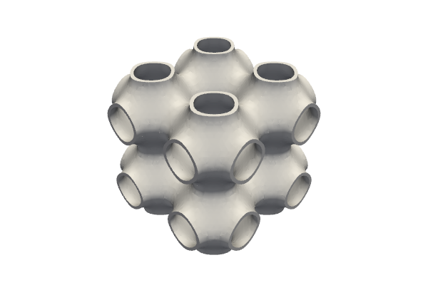
Schwarz D:
schwarz_d = microgen.Tpms(
surface_function=microgen.surface_functions.schwarz_d,
offset=0.3,
cell_size=1.0,
repeat_cell=2,
resolution=20
)
schwarz_d.sheet.plot(color='white')
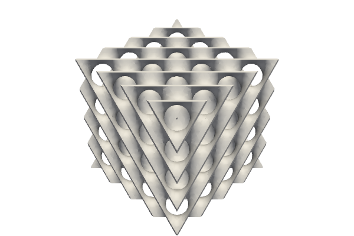
Neovius:
neovius = microgen.Tpms(
surface_function=microgen.surface_functions.neovius,
offset=0.3,
cell_size=1.0,
repeat_cell=2,
resolution=20
)
neovius.sheet.plot(color='white')
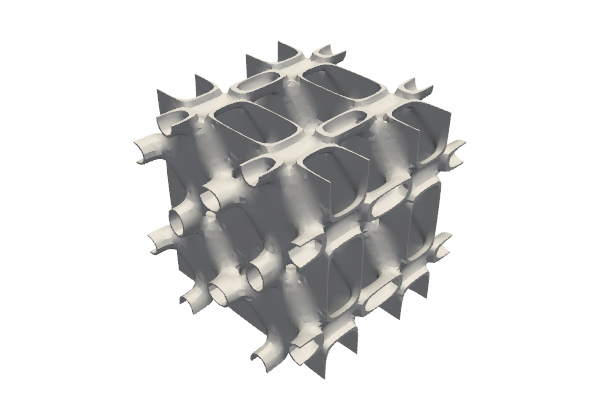
Using Density Instead of Offset
You can specify a target density instead of an offset value:
gyroid_50 = microgen.Tpms(
surface_function=microgen.surface_functions.gyroid,
density=0.5, # 50% density
cell_size=1.0,
repeat_cell=2,
resolution=20
)
gyroid_50.sheet.plot(color='white')
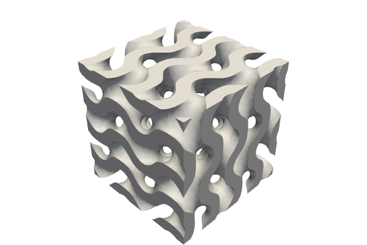
Spherical TPMS
Create TPMS on a spherical coordinate system:
spherical_gyroid = microgen.SphericalTpms(
radius=2.0,
surface_function=microgen.surface_functions.gyroid,
offset=0.3,
cell_size=0.5,
repeat_cell=(3, 0, 0), # 0 = auto-fill to complete sphere
resolution=20
)
spherical_gyroid.sheet.plot(color='white')
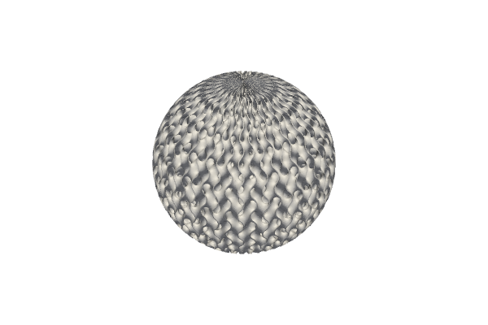
Cylindrical TPMS
Create TPMS on a cylindrical coordinate system:
cylindrical_gyroid = microgen.CylindricalTpms(
radius=1.5,
surface_function=microgen.surface_functions.gyroid,
offset=0.3,
cell_size=0.5,
repeat_cell=(2, 0, 3), # 0 = auto-fill circumference
resolution=20
)
cylindrical_gyroid.sheet.plot(color='white')
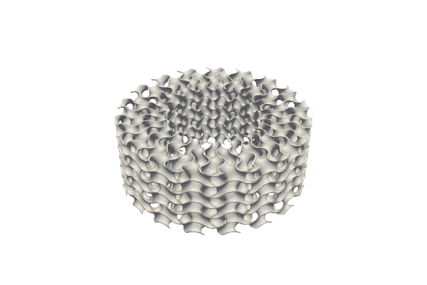
3D Operations
Transforms
Shapes and phases share the PyVista transform convention:
translate(offset), rotate(rotation, point=None) and
scale(factor, point=None). inplace=False (the default) returns a new
object, inplace=True mutates the object; both return it. rotate and
scale pivot on point, the world origin when it is omitted. A rotation
is a SciPy Rotation or an orthogonal 3x3
matrix, and scale factors must be strictly positive.
A shape keeps its class when its native parameters can express the
transform: a uniformly scaled sphere is still a
Sphere with a new radius, and a TPMS
scaled by 2 has twice its cell_size: its offset (a level of the raw
TPMS field) and its density are unchanged, while the thickness of the F-rep
parts (as_sheet()) doubles. Otherwise the
result is a generic Shape carrying the
transformed field, and the in-place form raises ValueError.
import microgen
from scipy.spatial.transform import Rotation
sphere = microgen.Sphere(radius=0.5, center=(1.0, 0.0, 0.0))
bigger = sphere.scale(2.0, point=sphere.center)
print(type(bigger).__name__, bigger.radius, bigger.center)
stretched = sphere.scale((1.0, 2.0, 1.0)) # no native form
print(type(stretched).__name__)
gyroid = microgen.Tpms(
surface_function=microgen.surface_functions.gyroid,
offset=0.3,
resolution=15,
)
turned = gyroid.rotate(Rotation.from_euler("z", 90, degrees=True))
print(turned.period) # quarter turns keep the period, permuted
gyroid.scale(2.0).generate_surface_mesh().plot(color='white')
Sphere 1.0 (1.0, 0.0, 0.0)
Shape
(1.0, 1.0, 1.0)
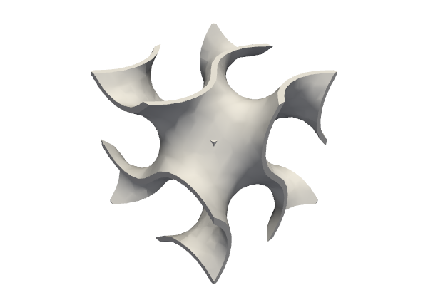
On a Phase, every representation (field, CAD,
surface mesh, cached grid) moves together. scale multiplies iso by
the same factor as the field, so the solid {field < iso} is exactly the
scaled solid, and period follows the transform. A rotation that is not a
quarter turn clips the field to the rotated original bounds, so a periodic
field does not bring in material from outside the rotated domain.
phase = microgen.Phase.from_shape(gyroid, resolution=30)
moved = phase.translate((1.0, 0.0, 0.0))
doubled = phase.scale(2.0, point=(0.0, 0.0, 0.0))
print(moved.period, doubled.period)
(1.0, 1.0, 1.0) (2.0, 2.0, 2.0)
Repeat
Repeat a shape in a grid pattern:
import microgen
import pyvista as pv
# Create a sphere
sphere = microgen.Sphere(center=(0, 0, 0), radius=0.15)
sphere_cad = sphere.generate_cad()
# Create RVE (Representative Volume Element)
rve = microgen.Rve(dim=(0.5, 0.5, 0.5))
# Repeat the sphere in a 3x3x3 grid
repeated = microgen.repeat_shape(
unit_geom=sphere_cad,
rve=rve,
grid=(3, 3, 3)
)
# Export to STL
repeated.export_stl("repeated.stl")
# Visualize
plotter = pv.Plotter()
plotter.add_mesh(pv.read("repeated.stl"))
plotter.show()
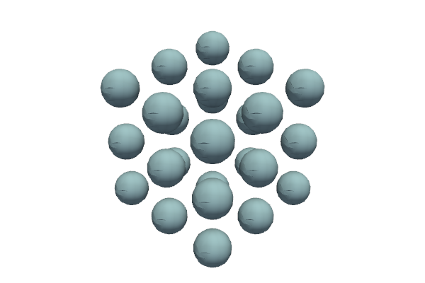
Raster
Raster a phase to create a periodic pattern:
from microgen.cad import make_compound_from_solids
# Create ellipsoid and convert to OCCT shape
ellipsoid = microgen.Ellipsoid(
center=(0, 0, 0),
radii=(0.15, 0.1, 0.08)
)
ellipsoid_cad = ellipsoid.generate_cad()
phase = microgen.Phase.from_cad(ellipsoid_cad)
# Define RVE
rve = microgen.Rve(dim=(0.5, 0.5, 0.5))
# Raster the phase
rastered = microgen.raster_phase(
phase=phase,
rve=rve,
grid=(2, 2, 2)
)
# Compose a compound from all rastered solids and export to STL
compound = make_compound_from_solids(
solid.wrapped for p in rastered for solid in p.cad.solids()
)
compound.export_stl("rastered.stl")
# Visualize
plotter = pv.Plotter()
plotter.add_mesh(pv.read("rastered.stl"), color='white')
plotter.show()
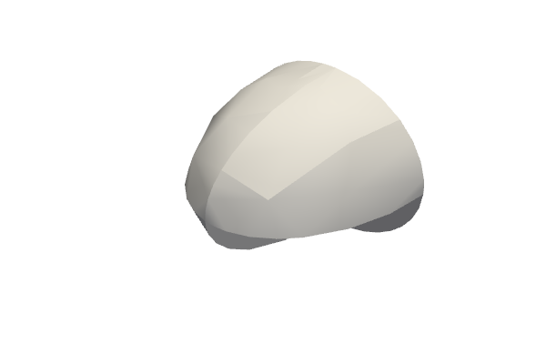
Meshing
Regular Mesh with Gmsh
Generate a tetrahedral mesh using Gmsh:
import microgen
# Create a TPMS geometry
gyroid = microgen.Tpms(
surface_function=microgen.surface_functions.gyroid,
offset=0.3,
resolution=20
)
shape = gyroid.generate_cad(type_part='sheet')
# Export to STEP file first
shape.export_step('gyroid.step')
# Create mesh from STEP file
microgen.mesh(
mesh_file='gyroid.step',
size=0.1,
order=1,
output_file='gyroid_mesh.msh'
)
Periodic Mesh
Generate a periodic mesh suitable for homogenization:
# Create geometry
gyroid = microgen.Tpms(
surface_function=microgen.surface_functions.gyroid,
offset=0.3,
cell_size=1.0,
resolution=20
)
shape = gyroid.generate_cad(type_part='sheet')
# Create a phase from the shape
phase = microgen.Phase.from_cad(shape)
# Export to STEP file first
shape.export_step('gyroid.step')
# Create periodic mesh
microgen.mesh_periodic(
mesh_file='gyroid.step',
rve=microgen.Rve(dim=(1, 1, 1)),
list_phases=[phase],
size=0.05,
order=1,
output_file='gyroid_periodic.msh'
)
Remeshing with Mmg
Refine or adapt an existing mesh using Mmg:
Note
Mmg must be installed separately to use remeshing features.
# Use Mmg for remeshing
mmg = microgen.Mmg(
input_mesh='input.mesh',
output_mesh='output.mesh',
hausd=0.01, # Hausdorff distance
hmin=0.01, # Minimum edge size
hmax=0.1 # Maximum edge size
)
mmg.run()